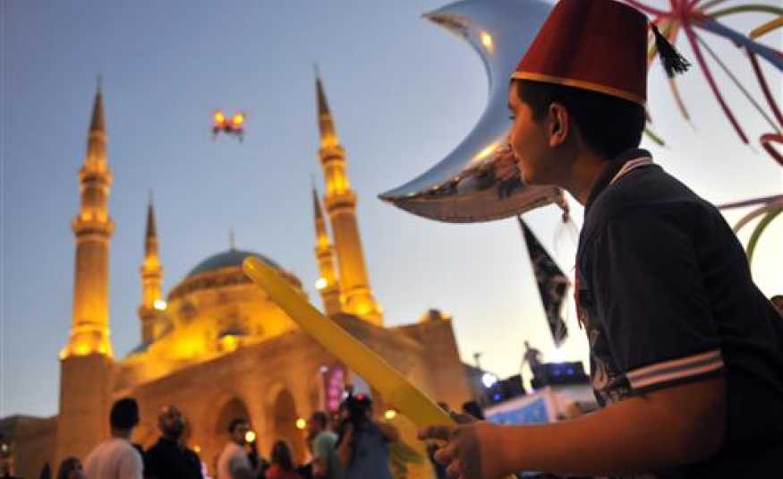
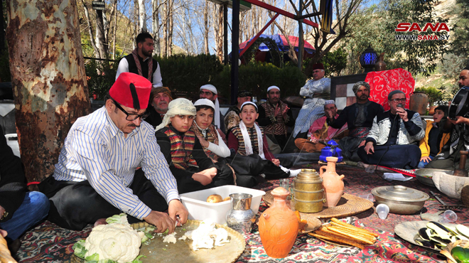
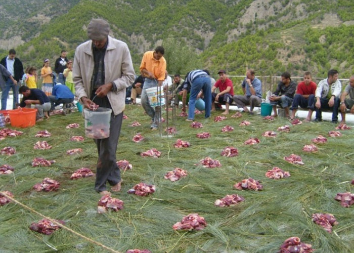
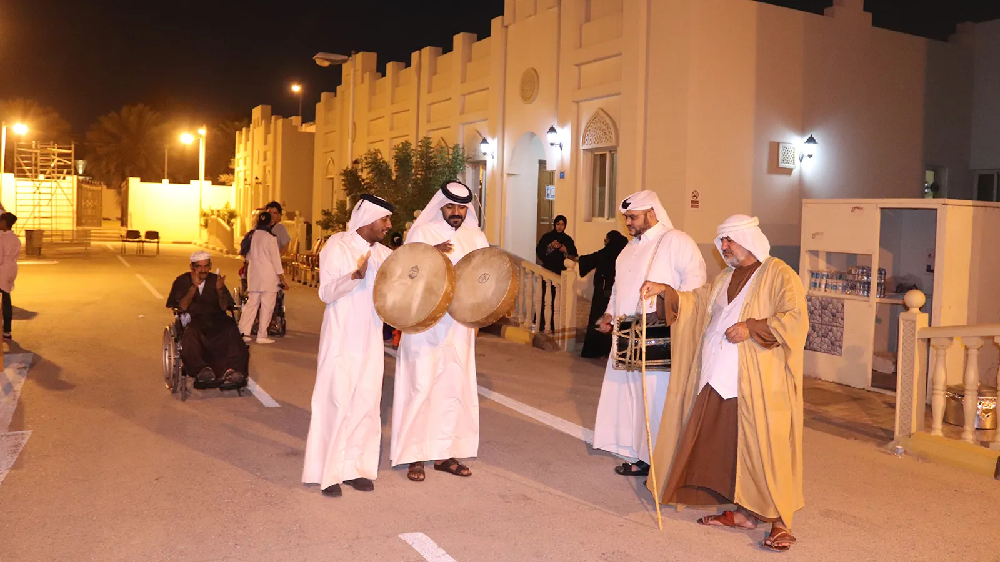
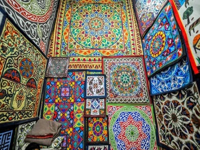
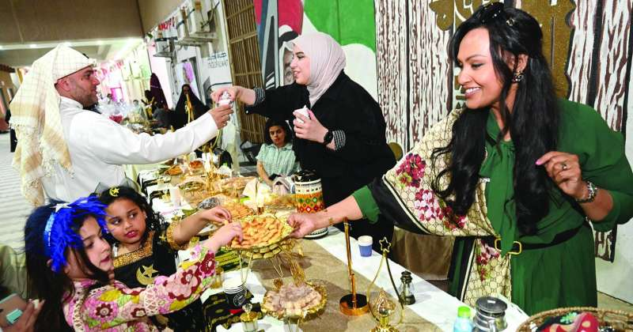
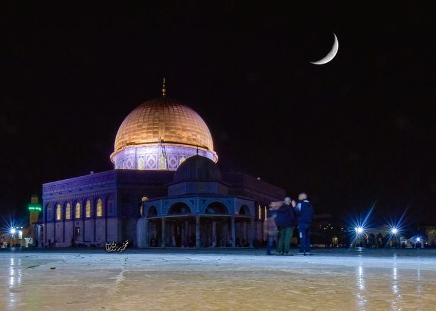

Amazing Traditions In Arab Countries In Ramadan
-

سيبانة رمضان
Lebanon
أصلها "استبانة رمضان" اذ ان الشعب يترقب رؤية الهلال
-

تكريزة رمضان
Syria
عادة دمشقية ينقلها سوريون إلى بلاد اللجوء
-

الوزيعة
Algeria
من العادات والتقاليد التي توارثها سكان منطقة القبائل أبا عن جد، يقوم سكان القرى بجمع الأموال لشراء أو ثيران، و تتم عملية النحر
-

النافلة
Qatar
عادة تراثية قديمة تعنى بالعطاء والمشاركة
-

الخيامية
Eygpt
بألوانها المبهجة تنتشر أغطية "الخيامية" في المنازل المصرية استعدادًا لاستقبال شهر رمضان المبارك.
-

يوم القريش
Kuwait
وخلال يوم القريش يجتمع أفراد العائلة بطريقة رمزية، ويتناولون آخر وجبة قبل بداية شهر الصوم،
-
ضرب النفير
Morocco
يقوم النفار في المغرب أو ما يعرف بالمسحراتي أو المسحرجي بالنفخ في البوق عدة مرات بعد ثبات ظهور هلال رمضان
-

فقدة الولايا
Palestine
حيث يجول الرجال على منازل شقيقاتهم وبناتهم المتزوجات للاطمئنان على أحوالهن